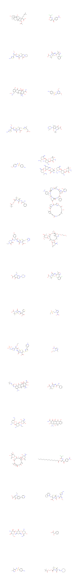

import polars as pl
import datamol as dmUsing datamol - Python library that works with molecules
df_ai = pl.read_csv("chembl_anti-inf.csv", sep = ";")
df_ai.head()
shape: (5, 29)
| Parent Molecule | Name | Synonyms | Research Codes | Phase | Drug Applicants | USAN Stem | USAN Year | USAN Definition | USAN Stem - Substem | First Approval | ATC Codes | Level 4 ATC Codes | Level 3 ATC Codes | Level 2 ATC Codes | Level 1 ATC Codes | Indication Class | Patent | Drug Type | Passes Rule of Five | First In Class | Chirality | Prodrug | Oral | Parenteral | Topical | Black Box | Availability Type | Smiles |
|---|---|---|---|---|---|---|---|---|---|---|---|---|---|---|---|---|---|---|---|---|---|---|---|---|---|---|---|---|
| str | str | str | str | f64 | str | str | str | str | str | str | str | str | str | str | str | str | str | str | i64 | i64 | str | i64 | i64 | i64 | i64 | i64 | str | str |
| "CHEMBL374975" | "FUSIDIC ACID" | "ANHYDROUS FUSI... | "CEM-102|NSC-56... | 4.0 | "" | "" | "1967" | "" | "" | "" | "J01XC01 | S01A... | "J01XC - Steroi... | "J01X - OTHER A... | "J01 - ANTIBACT... | "J - ANTIINFECT... | "Antibacterial" | "None" | "1:Synthetic Sm... | 0 | 0 | "Single Stereoi... | 0 | 0 | 0 | 0 | 0 | "Unknown" | "CC(=O)O[C@H]1C... |
| "CHEMBL130" | "CHLORAMPHENICO... | "9-HYDROXY-9-PH... | "NSC-16331|NSC-... | 4.0 | "Ivax Pharmaceu... | "" | "" | "" | "" | "1950" | "S01AA01 | S03A... | "S01AA - Antibi... | "S01A - ANTIINF... | "S01 - OPHTHALM... | "S - SENSORY OR... | "Antibacterial;... | "None" | "1:Synthetic Sm... | 1 | 0 | "Single Stereoi... | 0 | 1 | 1 | 1 | 0 | "Unknown" | "O=C(N[C@H](CO)... |
| "CHEMBL186" | "CEFEPIME" | "BMY-28142|CEFE... | "BMY-28142|J01D... | 4.0 | "Samson Medical... | "'cef-'" | "1987" | "cephalosporins... | "'cef-(cef-)'" | "1996" | "J01DE01" | "J01DE - Fourth... | "J01D - OTHER B... | "J01 - ANTIBACT... | "J - ANTIINFECT... | "Antibacterial" | "None" | "1:Synthetic Sm... | 1 | 0 | "Single Stereoi... | 0 | 0 | 1 | 0 | 0 | "Prescription O... | "CO/N=C(\C(=O)N... |
| "CHEMBL222645" | "FLOXACILLIN" | "ABBOFLOX|BRL 2... | "BRL 2039|BRL-2... | 4.0 | "" | "'-cillin'" | "1972" | "penicillins" | "'-cillin(-cill... | "" | "J01CF05" | "J01CF - Beta-l... | "J01C - BETA-LA... | "J01 - ANTIBACT... | "J - ANTIINFECT... | "Antibacterial" | "None" | "1:Synthetic Sm... | 1 | 0 | "Single Stereoi... | 0 | 0 | 0 | 0 | 0 | "Unknown" | "Cc1onc(-c2c(F)... |
| "CHEMBL2364632" | "SARECYCLINE" | "P-005672|P0056... | "P-005672|P0056... | 4.0 | "Almirall Llc" | "'-cycline'" | "2012" | "antibiotics (t... | "'-cycline(-cyc... | "2018" | "J01AA14" | "J01AA - Tetrac... | "J01A - TETRACY... | "J01 - ANTIBACT... | "J - ANTIINFECT... | "" | "US-8318706-B2" | "1:Synthetic Sm... | 1 | 0 | "Single Stereoi... | 0 | 1 | 0 | 0 | 0 | "Prescription O... | "CON(C)Cc1ccc(O... |
#print(df_ai.glimpse())df_ai_name_sm = df_ai.select(["Name", "Smiles"])
df_ai_name_sm.head()
shape: (5, 2)
| Name | Smiles |
|---|---|
| str | str |
| "FUSIDIC ACID" | "CC(=O)O[C@H]1C... |
| "CHLORAMPHENICO... | "O=C(N[C@H](CO)... |
| "CEFEPIME" | "CO/N=C(\C(=O)N... |
| "FLOXACILLIN" | "Cc1onc(-c2c(F)... |
| "SARECYCLINE" | "CON(C)Cc1ccc(O... |
#df_ai.write_csv("df_ai.csv", sep = ",")# Grab all SMILES from df_ai
df_ai_sm = df_ai["Smiles"]
# Load a list of molecules in SMILES
mol_ls = [dm.to_mol(smile) for smile in df_ai_sm]
# Convert the list of molecules into 2D images
dm.to_image(mol_ls, n_cols = 2, mol_size = (900, 900))
# Extract Murcko scaffolds from mol_ls
m_scaffolds = [dm.to_scaffold_murcko(mol) for mol in mol_ls]
dm.to_image(m_scaffolds, mol_size = (400, 400))